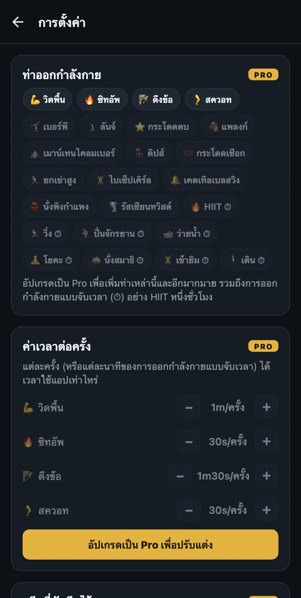
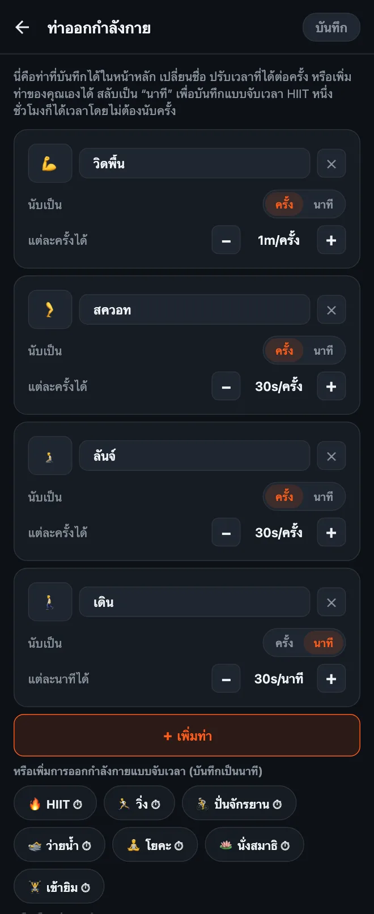

วิธีปรับแต่งท่าออกกำลังกายใน HonorFit
สวัสดีครับทุกคน! สำหรับผม HonorFit เริ่มต้นจากการเป็นแอปบล็อกแอปแบบวิดพื้น: Instagram จะล็อกไว้จนกว่าผมจะวิดพื้นสักหน่อย แล้วผมก็กดบันทึกเองตามระบบความซื่อสัตย์ (ไม่มีกล้อง) ในแอปมีท่าออกกำลังกายมาให้สี่ท่า: วิดพื้น ซิทอัพ ดึงข้อ และสควอท
แต่ไม่ใช่ทุกคนจะอยากวิดพื้น บางคนข้อมือไม่ไหว บางคนชอบเบอร์พีมากกว่า หรือบางคนวันนี้วิ่งไปแล้ว 8 กิโล และอยากให้นับด้วย ก็แฟร์ครับ! เลยปรับได้หมดเลย นี่คือวิธีทำแบบละเอียด และอะไรฟรี อะไรต้องใช้ Pro
อะไรฟรี อะไรต้องใช้ Pro
ขอบอกตรงๆ ก่อนเลยว่าการปรับแต่งท่าออกกำลังกายเป็นฟีเจอร์ Pro เวอร์ชันฟรีจะมีสี่ท่าในตัว พร้อมค่าเวลาตามนี้:
| ท่าออกกำลังกาย | แต่ละครั้งได้ (ค่าเริ่มต้น) |
|---|---|
| 💪 วิดพื้น | 1 นาที |
| 🔥 ซิทอัพ | 30 วินาที |
| 🧗 ดึงข้อ | 1 นาที 30 วินาที |
| 🦵 สควอท | 30 วินาที |
ในเวอร์ชันฟรี วงล้อแต่ละอันหมุนได้สูงสุด 20 ครั้งต่อเซ็ต และเก็บเวลาไว้ได้สูงสุดทีละ 20 นาที ส่วนการบล็อก การบันทึก และสถิติ ใช้ฟรีตลอดไป
Pro ราคา $3 ต่อเดือน หรือ $19.99 จ่ายครั้งเดียว (นี่คือราคาในสหรัฐฯ ราคาจริงต่างกันไปตามประเทศและสกุลเงิน สโตร์จะแสดงราคาเป็นสกุลเงินของคุณ) Pro ให้คุณเพิ่ม เปลี่ยนชื่อ และลบท่า ปรับว่าแต่ละครั้งได้เวลาเท่าไหร่ บันทึกการออกกำลังกายแบบจับเวลาเป็นนาที เพิ่มวงล้อเป็นสูงสุด 100 ครั้งต่อเซ็ต และปลดลิมิต 20 นาที Pro ยังมีอย่างอื่นอีก แต่บทความนี้ขอพูดแค่เรื่องท่าออกกำลังกายนะครับ

1. เปิดหน้าแก้ไขท่าออกกำลังกาย
- ที่หน้าหลัก แตะรูปเฟืองมุมขวาบนเพื่อเปิดการตั้งค่า
- แตะการ์ด ท่าออกกำลังกาย ด้านบนสุด
คุณจะเห็นการ์ดของแต่ละท่า ทุกอย่างที่ทำในหน้านี้จะยังไม่มีผลจนกว่าจะแตะ บันทึก ที่มุมขวาบน เพราะฉะนั้นลองกดเล่นได้ตามสบาย ถ้าย้อนกลับออกไปโดยไม่บันทึก ก็ไม่มีอะไรเปลี่ยน

2. เปลี่ยนชื่อท่าหรือเปลี่ยนอีโมจิ
แตะที่ชื่อแล้วพิมพ์อะไรก็ได้ตามใจ “วิดพื้น” จะเปลี่ยนเป็น “วิดพื้นแบบคุกเข่า” หรือ “วิดพื้นกับผนัง” ก็ได้ ถ้านั่นคือท่าที่คุณทำจริงๆ ถ้าจะเปลี่ยนไอคอน แตะช่องอีโมจิทางซ้ายแล้วเลือกจากตาราง (มีอีโมจิสายฟิตเนสให้เลือกราว 40 ตัว)
เรื่องเล็กๆ: ชื่อท่าในตัวจะเปลี่ยนตามภาษาของแอป ถ้ามือถือตั้งเป็นภาษาไทยก็จะเห็น “สควอท” ถ้าตั้งเป็นภาษาอังกฤษก็จะเห็น “Squats” แต่พอคุณเปลี่ยนชื่อเองแล้ว แอปจะแสดงตามที่คุณพิมพ์เป๊ะๆ
3. ตั้งว่าแต่ละครั้งได้เวลาหน้าจอเท่าไหร่
ใต้แต่ละท่าจะมี แต่ละครั้งได้ พร้อมปุ่ม − กับ + แตะหนึ่งทีขยับทีละ 5 วินาที และต่ำสุดคือ 5 วินาที คุณจะให้เบอร์พีได้ 1 นาที 30 วินาที แล้วให้กระโดดตบได้ 10 วินาทีก็ได้ แล้วแต่ว่าคุณรู้สึกว่าแบบไหนแฟร์
ถ้าจะปรับแค่ค่าเวลาโดยไม่เปิดหน้าแก้ไขก็ได้ ในการตั้งค่ามีส่วน ค่าเวลาต่อครั้ง อยู่ใต้การ์ดท่าออกกำลังกาย พร้อมปุ่ม −/+ แบบเดียวกัน
4. เพิ่มท่าออกกำลังกาย
ทำได้สองวิธี:
- แตะ “＋ เพิ่มท่า” คุณจะได้การ์ดใหม่ชื่อ “ท่าใหม่” ที่ได้ครั้งละ 30 วินาที เปลี่ยนชื่อแล้วตั้งค่าเวลาได้เลย
- แตะท่าแนะนำ ใต้ปุ่มจะมีแถวท่ายอดนิยมที่เพิ่มได้ในแตะเดียว: เบอร์พี, ลันจ์, กระโดดตบ, แพลงก์, เมาน์เทนไคลมเบอร์, ดิปส์, กระโดดเชือก, ยกเข่าสูง, ไบเซ็ปเคิร์ล, เคตเทิลเบลสวิง, นั่งพิงกำแพง และรัสเซียนทวิสต์ ท่าพวกนี้ก็เริ่มที่ครั้งละ 30 วินาทีเหมือนกัน เพิ่มท่าไหนไปแล้ว ท่านั้นจะหายไปจากรายการแนะนำ
ทุกท่าที่มีจะได้วงล้อของตัวเองที่หน้าหลัก ผมเลยแนะนำให้มีสักสี่ท่าพอ มากกว่านั้นต้องเลื่อนหาท่าที่ต้องการ
5. บันทึกการออกกำลังกายแบบจับเวลา (นับเป็นนาทีแทนครั้ง)
อันนี้คือเรื่องที่โดนถามบ่อยที่สุด การออกกำลังกายบางอย่างนับเป็นครั้งไม่ได้ เช่น เดิน คลาสโยคะ วิ่ง หรือเข้ายิมหนึ่งชั่วโมง แต่ละการ์ดจะมีสวิตช์ นับเป็น: ครั้ง | นาที สลับเป็น นาที แล้ววงล้อนั้นจะนับเป็นนาที และค่าเวลาจะเปลี่ยนเป็น แต่ละนาทีได้
มีท่าแนะนำแบบจับเวลาให้แตะเพิ่มได้ทันทีด้วย (มีสัญลักษณ์ ⏱): HIIT, วิ่ง, ปั่นจักรยาน, ว่ายน้ำ, โยคะ, นั่งสมาธิ, เข้ายิม และเดิน
การออกกำลังกายแบบจับเวลาที่เพิ่มใหม่จะเริ่มที่ 30 วินาทีต่อนาที HIIT หนึ่งชั่วโมงก็จะได้เวลาใช้แอป 30 นาที ข้อควรรู้: เวลาสลับท่าไปมาระหว่างครั้งกับนาที ค่าเวลาจะรีเซ็ตกลับเป็น 30 วินาที เพราะ “ครั้งละ 1 นาที” กับ “นาทีละ 1 นาที” นี่คนละเรื่องกันเลย สลับเสร็จแล้วก็ตั้งใหม่ได้เลยครับ
วงล้อนับเป็นนาทีเต็มเท่านั้น แพลงก์ 30 วินาทีเลยไม่ค่อยเข้ากับโหมดนาที ท่าค้างแบบนี้ผมจะตั้งเป็นครั้งไว้ แล้วกำหนดเองว่าหนึ่งครั้งหมายถึงอะไร (เช่น ค้าง 20 วินาทีนับเป็นหนึ่งครั้ง)
6. ลบท่า หรือเริ่มใหม่ทั้งหมด
- แตะ ✕ บนการ์ดเพื่อลบท่านั้น ต้องเหลือไว้อย่างน้อยหนึ่งท่าเสมอ
- คืนค่าเริ่มต้น ด้านล่างสุดจะเอาสี่ท่าเดิมกลับมาพร้อมค่าเดิม และก็เหมือนทุกอย่างในหน้านี้ จะมีผลก็ต่อเมื่อแตะบันทึกแล้ว
ผมเลือกค่าเวลายังไง
ค่าเวลาก็คือราคาของแอปที่คุณบล็อกไว้ เป้าหมายคือตั้งราคาที่คุณยอมจ่ายจริงๆ แทนที่จะโกง จุดเริ่มต้นที่ผมแนะนำ:
- ท่ายากได้มากกว่า ดึงข้อกับเบอร์พี 1 นาที 30 วินาที วิดพื้น 1 นาที สควอทกับลันจ์ 30 วินาที
- แบบจับเวลาให้ประมาณครึ่งเดียว 30 วินาทีต่อนาที แปลว่าเดิน 20 นาทีแลกไถฟีดได้ 10 นาที ถ้าการเดินคือนิสัยที่คุณอยากสร้างที่สุด ก็เพิ่มเป็นนาทีละ 1 นาทีไปเลย
- ถ้าจับได้ว่าตัวเองเริ่มโกงตัวเลข ให้ลดราคาลง นี่คือกฎของผมกับระบบความซื่อสัตย์ ถ้าบันทึกครั้งที่ไม่ได้ทำ แปลว่าราคาผิด ไม่ใช่ว่าคุณไม่เก่ง
- โหมดโหด (Pro) ลดทุกค่าลงครึ่งหนึ่งด้วยปุ่มเดียวด้านบนหน้าหลัก ถ้าอยากได้วันที่หนักขึ้นโดยไม่ต้องแก้ทีละท่า
ถ้าอยากได้ไอเดียการตั้งค่าแบบเจาะจง ผมเขียนไว้อีกสองบทความ: ใช้ขมิบคีเกลกับท่าสะพานสะโพกเป็นท่าปลดล็อก และท่าเบาๆ สำหรับคนที่ไม่ถนัดวิดพื้น
HonorFit Blocker คือแอปบล็อกแอปที่ใช้ฟรีทั้ง iPhone และ Android ใช้ระบบความซื่อสัตย์ ไม่ใช้กล้อง ไม่มีข้อมูลออกจากมือถือคุณ ท่าออกกำลังกายแบบกำหนดเองมาพร้อม Pro มันไม่ได้เหมาะกับทุกคน แต่หวังว่าหลายคนจะชอบนะครับ!